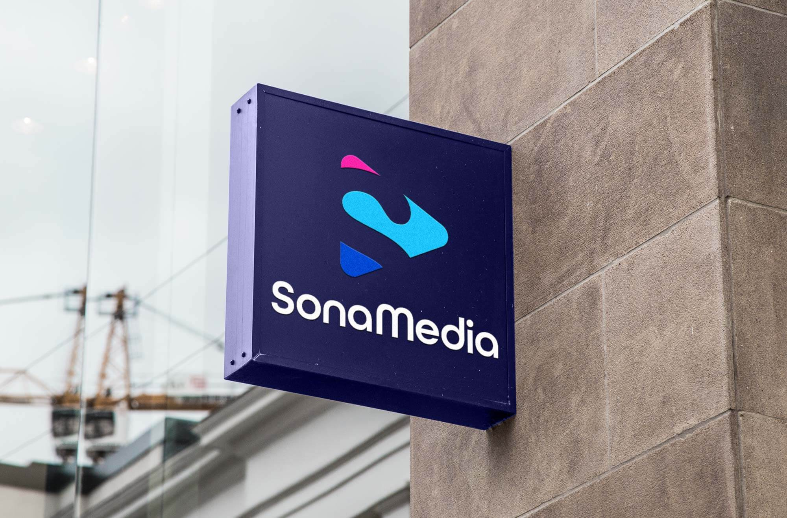
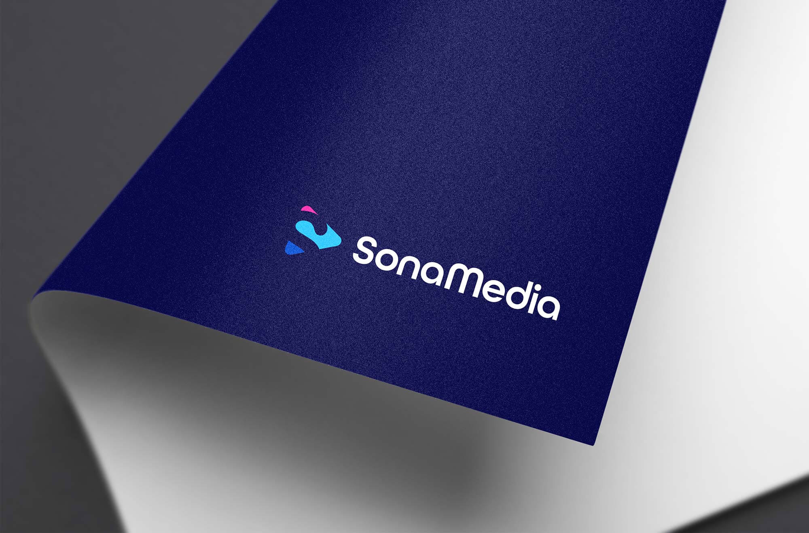

Sona Media Logo
Introduction
Sona Media creates and manages digital content for modern brands. The identity needed to feel creative and polished while staying legible across web, social, and print. I designed a distinctive “S” mark and wordmark system with a refined color story to signal craft, clarity, and momentum.
The Challenge
Differentiate Sona Media in a crowded creator/agency market with a logo that is:
- Memorable: A unique mark that reads instantly at small sizes.
- Versatile: Works in icon-only, stacked, and horizontal lockups.
- Expressive: Conveys creativity without sacrificing professional credibility.
Design Approach
The mark: A sculpted “S” with subtle shading through the middle stroke to create depth and a sense of motion—hinting at layered content and editorial polish.
Color palette: Blues for trust and clarity, with lavender and pink accents for creativity and warmth. The palette provides strong contrast for accessibility and works across light and dark backgrounds.
Typography: A clean, modern sans serif complements the curves of the mark. Custom letterspacing ensures balance and legibility in both display and UI contexts.
System thinking: Clear space, minimum sizes, and usage guidance keep the identity consistent across social avatars, thumbnails, and large-format placements.
The Process
- Research: Audit of media brands to avoid generic waves/sound marks and overused monograms.
- Concepts: Sketching around ribbon, waveform, and continuous-path “S” forms.
- Vector refinement: Optical adjustments to the inner shading and stroke transitions for crisp rendering at small sizes.
- Systemization: Lockups, color ramps, and safe-zone rules for smooth handoff and future scalability.
Final Outcome
- Iconic “S” mark and wordmark with horizontal, stacked, and icon variants.
- Balanced color system that supports editorial, web UI, and marketing collateral.
- Consistent, legible application from social avatars to signage and print.
The identity positions Sona Media as a modern, reliable creative partner—distinctive enough to stand out, refined enough to scale.

